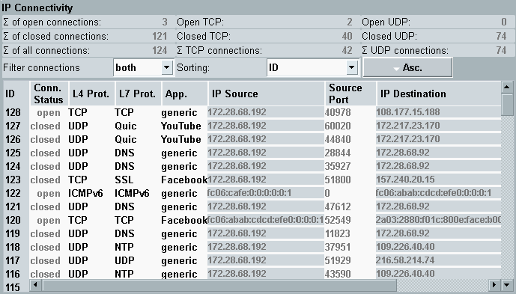

View IP Connectivity
This view provides an overview of all connections that have been opened since the measurement was started. Still open connections are listed as well as already closed connections.

IP Connectivity view
Use the settings above the table to filter or sort the table.
You can filter the table according to the connection status: "open" connections only, "closed" connections only or "both". Additional filter settings are available via hotkey, see "Filtering Evaluated Connections".
"Sorting" selects the table column to be used for sorting. The button toggles between ascending and descending order.
The top of the view provides statistical information.
The table in the lower part lists the following information for each connection:
- "Conn. Status": Connection status open or closed
- "L4 Prot.": Layer 4 protocol (transport layer)
- "L7 Prot.": Layer 7 protocol (application layer)
- "App.": Application name
- "IP Source", "Source Port": IP address and port of the source that has initiated the connection
- "IP Destination", "Dest. Port": IP address and port of the destination addressed by the source
- "Country": Country of the destination, as two-letter country code (ISO 3166-1), requires R&S CMW-KM052